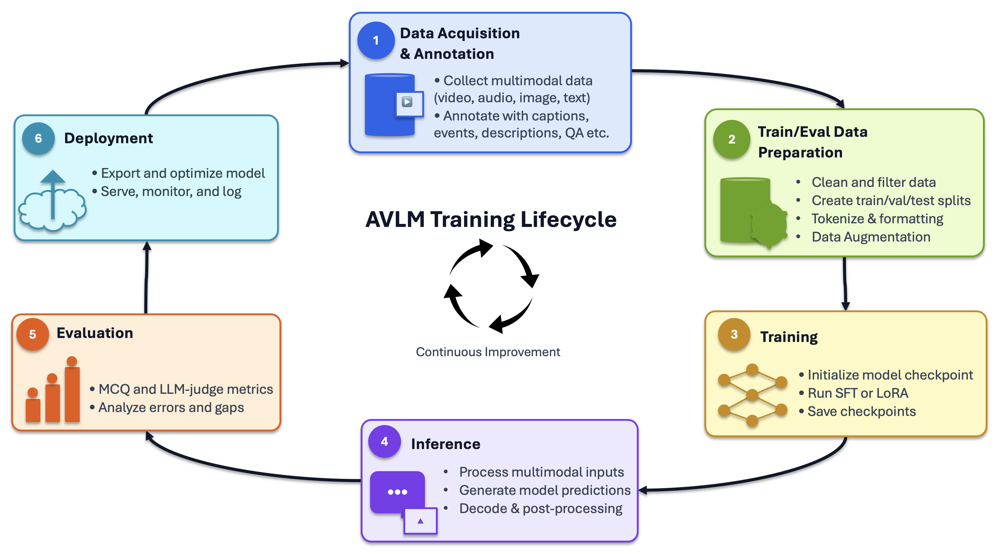

Sports Intelligence Playbooks#
{kind=link}
NVIDIA Sports Intelligence Playbooks give developers a structured framework to turn sports video, data, and domain expertise into specialized multimodal AI models. From data preparation and fine-tuning through evaluation and deployment, they help teams build AI that understands the game and powers a new generation of sports applications.
Sports Intelligence GitHub repository
Note
Supported models: These playbooks are validated for Nemotron 3 Nano Omni only. The NeMo AutoModel stack supports additional models; other models may be added here after testing confirms they meet our quality bar for sports intelligence.
NVIDIA Sports Intelligence Playbooks provide developers with end-to-end recipes for taking their own sports footage, annotations, metadata, and domain knowledge and using them to customize multimodal models for sports understanding.
The lifecycle spans data acquisition, annotation and preparation, inference, evaluation, optimization, and deployment.
The playbooks bring together NVIDIA accelerated computing, the Nemotron 3 Nano Omni multimodal model, model customization, evaluation tools, and inference pipeline into a reference workflow developers can adapt to their sport and application. NVIDIA Nemotron 3 Nano Omni brings unified multimodal reasoning into a single, highly efficient open model. Its hybrid Mixture-of-Experts design has 30 billion total parameters, with approximately 3 billion active per token. This allows it to run efficiently on enterprise hardware including edge systems like NVIDIA Jetson. This model is available for commercial use.
The result is a path for turning general multimodal AI into specialized sports intelligence.
Playbook Includes#
Complete sports intelligence starter kit. Covers the full lifecycle—from sports-video annotation and data preparation through SFT/LoRA training, inference, and evaluation. Its template-driven data pipeline systematically generates multiple training-example types, enabling models to be trained and evaluated across different aspects of sports understanding.
Video- and audio-first fine-tuning with sports-relevant customization. Provides tested recipes for sports video clips with audio, rather than relying primarily on simpler image-and-text examples available in public recipes. It also exposes input-resolution and frame-sampling settings that help preserve details important to sports analysis, such as player motion, ball trajectory, court geometry, and event timing.
Domain-specific, measurable evaluation. Includes per-question-class MCQ metrics and LLM-as-a-judge evaluation for captions and descriptive answers.
Reproducible, scalable execution. Supplies tested distributed workflows, checkpoint conversion and parity checks, and automated inference-to-evaluation pipelines.
Informed choice of training method and framework. Supports and compares full SFT and LoRA across NeMo AutoModel and Megatron-Bridge, helping users balance quality, memory, iteration speed, and checkpoint size. When properly tuned, Megatron-Bridge can deliver up to 3x higher training throughput than AutoModel.
Last but not least: shared practical learnings. Shares lessons from building, debugging, optimizing, and validating multimodal training workflows that can help others fine-tune multimodal language models for sports intelligence.
The playbooks cover the complete AVLM lifecycle—from collecting and annotating multimodal sports data through train/eval preparation, SFT/LoRA training, inference, evaluation, and deployment. Evaluation findings feed back into data and training choices for continuous improvement.
{kind=link}

Playbooks Scripts: Implementation, launch scripts, and runbooks live in the Sports Intelligence Playbooks code repo under avlm/training/, avlm/inference/, and avlm/evals/.
Use the navigation on the left to browse by section.
Multimodal Language Models
- Data Curation
- Training
- Setup
- SFT
- LoRA
- SFT vs. LoRA (compute and checkpoint size)
- What Gets Trained (Target Modules and Freeze)
- Training Schedule and Batching
- Optimizer and Learning Rate
- Distributed Parallelism
- Data, Video, and Sequence Budget
- MoE Backend (AutoModel Only)
- Checkpointing
- Weights & Biases
- Post-Training (Megatron-Bridge Only)
- Quick Start
- Inference
- Evaluation
- Learnings